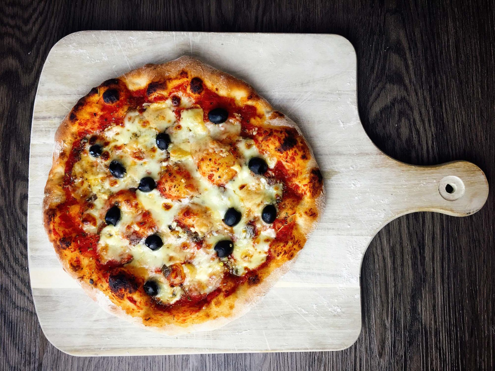
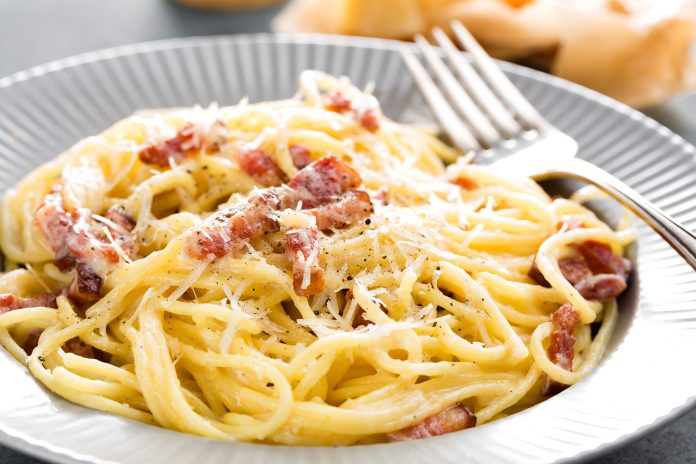
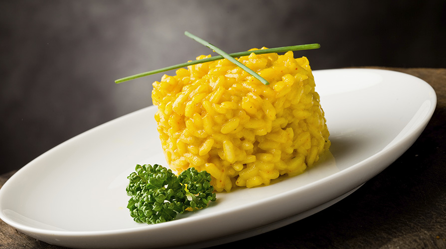
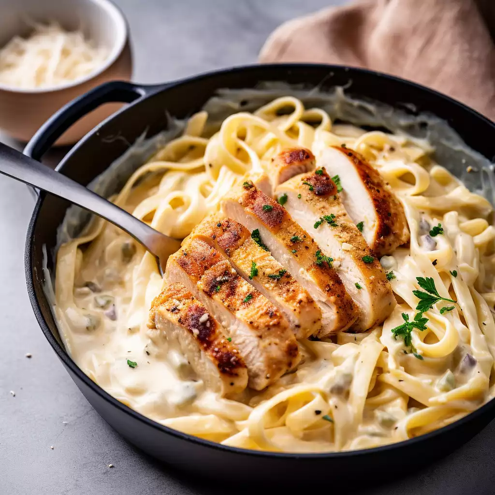
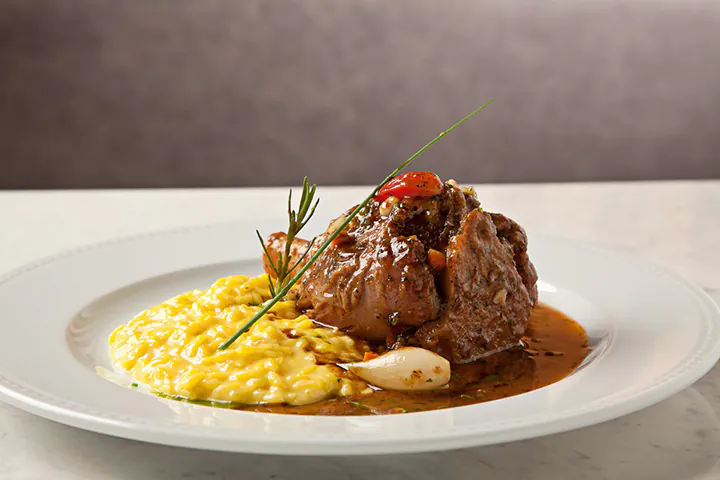
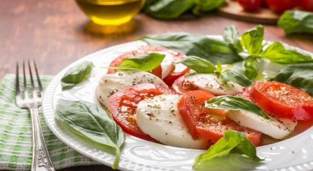
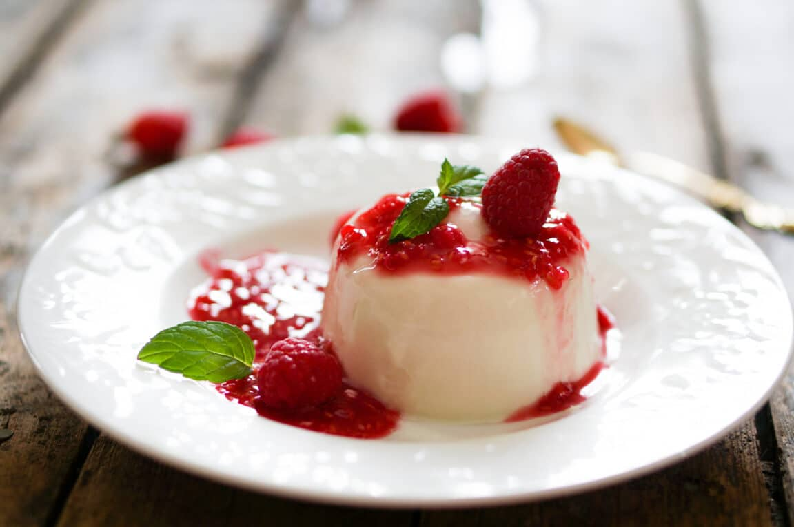

-
1. Pizza Napoletana
A pizza a legismertebb olasz étel, és a nápolyi pizza az igazi klasszikus. A vékony, ropogós tésztán friss paradicsomszósz, mozzarella, bazsalikom és olívaolaj találkozik. Az autentikus pizzát egy fatüzelésű kemencében sütik, ami adja meg azt a jellegzetes ízt. Az igazi pizza napolitana nem tartalmaz mást, csak a legjobb alapanyagokat, és a nápolyiak büszkék arra, hogy ők készítik a világ legjobb pizzáját!
-
2. Pasta alla Carbonara
A pasta alla carbonara a római konyha egyik legismertebb étele. A tészta (gyakran spagetti vagy rigatoni) tojásból, pecorino sajtból, guanciale (sertés arcából készült szalonna) és fekete bors keverékével készül. Az étel nem tartalmaz tejszínt – a szósz állaga a tojások és a pecorino sajt kombinációjából alakul ki.
-
3. Lasagna

A lasagna egy igazi olasz klasszikus, különösen Emilia-Romagna régióból származik. A tésztalapok váltakoznak a gazdag húsos ragúval (ragù bolognese), bechamel szósszal (fehér szósz) és parmezán sajttal. Az ételt rétegezve készítik, majd sütik a sütőben, így az ízek jól összeérnek.
-
4. Risotto alla Milanese
A rizottó egy másik olasz étel, amelyet számos variációban készítenek, de a risotto alla milanese a legnépszerűbb. Az ételt milánói safrányos rizottóként is ismerhetjük, amely a fűszeres, krémes rizottóhoz adja meg a jellegzetes sárga színt és egyedülálló ízt. A safrány mellett a rizottó alapja húsleves, vaj és parmezán.
-
5. Tiramisu

A tiramisu Olaszország egyik legkedveltebb desszertje, amely egy krémes réteges édesség kávéval és mascarpone sajttal. A sütemény alapja a babapiskóta, amit kávéba áztatnak, majd mascarpone krémmel rétegeznek. Az egész desszert kakaóporral van megszórva a tetején. Az édesség neve "emelj engem" jelentéssel bír, ami utalhat a desszert serkentő hatására is.
-
6. Fettuccine Alfredo
Bár az "Alfredo" név inkább az Egyesült Államokban ismert, a fettuccine Alfredo valódi olasz étel, amelyet Róma környékén készítenek. Az étel egy krémes vajjal és parmezán sajttal kevert fettuccine tészta, amely lágy és gazdag ízű. Az étel egyszerű, de igazán finom.
-
7. Osso Buco
Az osso buco egy milánói étel, amely főként marhahússal vagy borjúhússal készül. A hús darabokat (általában csonttal együtt) lassan főzik borban és zöldségekben, gyakran a híres gremolata nevű keverékkel, amely citromhéjat, fokhagymát és petrezselymet tartalmaz. Az ételt gyakran rizottóval vagy polentával tálalják.
-
8. Caprese saláta
A caprese saláta a friss alapanyagok szerelmeseinek kedvez. A paradicsom, mozzarella, friss bazsalikom, olívaolaj és egy csepp balzsamecet tökéletes harmóniát alkot. Az étel egyszerűsége és frissessége miatt az olaszok egyik kedvenc előétele.
-
9. Arancini

Arancini, vagyis töltött rizsgolyók, amelyek Sicíliából származnak, és az olasz utcai étkezés egyik jellemző darabjai. Az étel főtt rizsből készül, amit túrós vagy hússal, bolognai raguval, esetleg sajttal töltenek meg, majd paníroznak és forró olajban kisütnek. Az arancini kívül ropogós, belül pedig lágyság és ízek gazdagsága jellemzi.
-
10. Panna Cotta
A panna cotta egy olasz desszert, amely krémes állagával és könnyed ízével elnyerte a világ szívét. A desszert alapja tejszín, cukor és vanília, amelyet zselatinnal sűrítenek. A panna cotta-t gyakran gyümölcsökkel, karamellizált cukorral vagy csokoládéval tálalják.